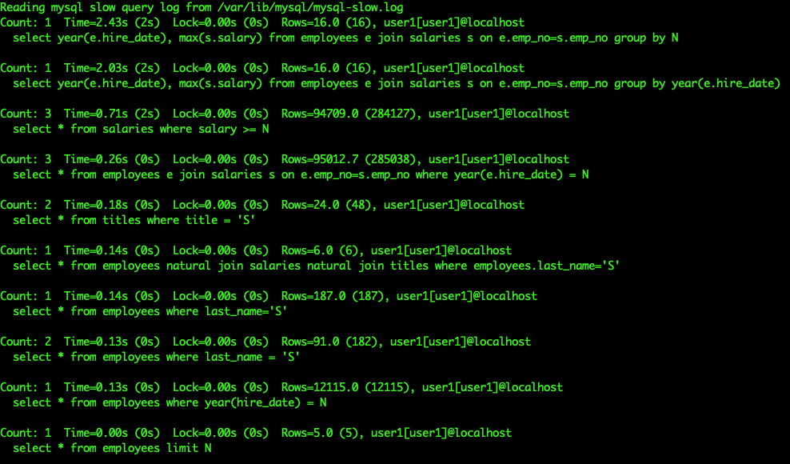

查詢效能
查詢效能提升
查詢效能是關聯式資料庫中非常重要的一環。如果未正確調整，SELECT 查詢可能會變得緩慢且令應用程式及 MySQL 伺服器感到吃力。重要的任務是識別出執行緩慢的查詢，並嘗試重新編寫查詢或在涉入的資料表上建立適當的索引來提升查詢效能。
慢查詢日誌
慢查詢日誌包含執行時間超過設定參數 long_query_time 的 SQL 語句。這些查詢是優化的候選對象。有一些不錯的工具可用於統整慢查詢日誌，例如 MySQL 自帶的 mysqldumpslow、Percona 提供的 pt-query-digest 等。以下是啟用並有效捕捉慢查詢的設定參數：
| 變數 | 說明 | 範例值 |
|---|---|---|
| slow_query_log | 啟用或停用慢查詢日誌 | ON |
| slow_query_log_file | 慢查詢日誌的位置 | /var/lib/mysql/mysql-slow.log |
| long_query_time | 閾值時間，執行時間超過此設定則會被記錄至慢查詢日誌 | 5 |
| log_queries_not_using_indexes | 啟用慢查詢日誌同時，此參數會將未使用任何索引且執行時間低於 long_query_time 的查詢也記錄到慢查詢日誌 |
ON |
在本章節中，我們會啟用 slow_query_log，將 long_query_time 設為 0.3（300 毫秒），並同時啟用 log_queries_not_using_indexes。
以下是針對 employees 資料庫執行的查詢：
-
SELECT * FROM employees WHERE last_name = 'Koblick' -
SELECT * FROM salaries WHERE salary >= 100000 -
SELECT * FROM titles WHERE title = 'Manager' -
SELECT * FROM employees WHERE year(hire_date) = 1995 -
SELECT year(e.hire_date), max(s.salary) FROM employees e JOIN salaries s ON e.emp_no=s.emp_no GROUP BY year(e.hire_date)
現在查詢 1、3 和 4 執行時間都在 300ms 內，但如果檢查慢查詢日誌，會發現這些查詢被紀錄因為它們未使用任何索引。查詢 2 和 5 則執行時間超過 300ms，且同樣未使用任何索引。
可使用以下指令查看慢查詢日誌的摘要：
mysqldumpslow /var/lib/mysql/mysql-slow.log

圖中還包含其他與上述查詢同時紀錄的查詢。mysqldumpslow 會將實際值以 N（數字）與 S（字串）取代，這行為可透過 -a 選項取消，但如果相似查詢使用不同值，輸出行數將大幅增加。
EXPLAIN 執行計劃
EXPLAIN 指令用於分析想要檢視的查詢。它描述了查詢的執行計劃，顯示 MySQL 如何解讀及執行該查詢。EXPLAIN 適用於 SELECT、INSERT、UPDATE 和 DELETE 語句。它會告訴你查詢中的表如何被 JOIN、索引是否被使用等訊息。理解 EXPLAIN 執行計劃的基本輸出，是判斷查詢效能的重要關鍵。
以下以範例查詢做說明：
mysql> EXPLAIN SELECT * FROM salaries WHERE salary = 100000;
+----+-------------+----------+------------+------+---------------+------+---------+------+---------+----------+-------------+
| id | select_type | table | partitions | type | possible_keys | key | key_len | ref | rows | filtered | Extra |
+----+-------------+----------+------------+------+---------------+------+---------+------+---------+----------+-------------+
| 1 | SIMPLE | salaries | NULL | ALL | NULL | NULL | NULL | NULL | 2838426 | 10.00 | Using where |
+----+-------------+----------+------------+------+---------------+------+---------+------+---------+----------+-------------+
1 row in set, 1 warning (0.00 sec)
主要欄位說明：
- partitions - 執行查詢時考慮的分割區數量。只有在表為分割區表時有效。
- possible_keys - 查詢執行計劃時考慮可用的索引列表。
- key - 查詢實際執行時使用的索引。
- rows - 執行時預估被掃描的資料列數。
- filtered - 篩選出的資料列百分比，數值越高越理想（100 表示最優化）。
- Extra - 額外資料，描述 MySQL 的執行細節，如是否使用索引、臨時表、只用 WHERE 篩選等。
上述查詢說明沒有分割區、無可用索引且實際沒使用索引，導致超過兩百萬資料列被掃描，但僅有 10% 資料列符合條件，且只有使用 WHERE 過濾。
建立索引
索引用以加快挑選符合特定欄位值的資料列。沒有索引時，MySQL 必須從第一列開始掃描整張表；表資料量過大時，掃描會變得非常耗時。有了索引後，MySQL 可直接定位資料起點，避免全表掃描。
主鍵同時也是索引，速度最快，且與資料表資料存放在一起。次索引則存在資料表外部，用以提升 SQL 陳述式效能。索引多半以 B-Tree 結構儲存，例外如空間索引 (spatial indexes) 用 R-Tree，而記憶體表用 hash 索引。
建索引有兩種方式：
- 建表時：若事先知曉常用於
WHERE子句欄位，可在建立資料表時同步建立索引。 - 修改表格：針對已含資料的表，使用
ALTER或CREATE INDEX指令建立索引。此操作不會阻塞表，但過程長短視資料量而定。
以下示範前述查詢中薪資欄位過濾的例子，遍歷 200 萬筆資料非常低效。
因此，我們在 salaries 表的 salary 欄位建立索引：
CREATE INDEX idx_salary ON salaries(salary)
或
ALTER TABLE salaries ADD INDEX idx_salary(salary)
重新查看 EXPLAIN 表現：
mysql> EXPLAIN SELECT * FROM salaries WHERE salary = 100000;
+----+-------------+----------+------------+------+---------------+------------+---------+-------+------+----------+-------+
| id | select_type | table | partitions | type | possible_keys | key | key_len | ref | rows | filtered | Extra |
+----+-------------+----------+------------+------+---------------+------------+---------+-------+------+----------+-------+
| 1 | SIMPLE | salaries | NULL | ref | idx_salary | idx_salary | 4 | const | 13 | 100.00 | NULL |
+----+-------------+----------+------------+------+---------------+------------+---------+-------+------+----------+-------+
1 row in set, 1 warning (0.00 sec)
現在使用了剛建的 idx_salary 索引，掃描資料筆數由兩百多萬降至 13 筆，且全部符合條件。查詢執行時間也由數百毫秒降至幾乎忽略不計。
另一範例，搜尋特定的 first_name 與 last_name 組合，但偶爾也會只用 last_name 搜尋：
mysql> EXPLAIN SELECT * FROM employees WHERE last_name = 'Dredge' AND first_name = 'Yinghua';
+----+-------------+-----------+------------+------+---------------+------+---------+------+--------+----------+-------------+
| id | select_type | table | partitions | type | possible_keys | key | key_len | ref | rows | filtered | Extra |
+----+-------------+-----------+------------+------+---------------+------+---------+------+--------+----------+-------------+
| 1 | SIMPLE | employees | NULL | ALL | NULL | NULL | NULL | NULL | 299468 | 1.00 | Using where |
+----+-------------+-----------+------------+------+---------------+------+---------+------+--------+----------+-------------+
1 row in set, 1 warning (0.00 sec)
查詢結果中約 1% 記錄符合條件，雖然只有約 30 萬筆資料，速度尚可，但若資料成千上萬甚至百萬筆時就會很慢。此時，我們會在 last_name 與 first_name 建立複合索引（Composite Index），非單獨建立兩個索引：
CREATE INDEX idx_last_first ON employees(last_name, first_name)
再次執行 EXPLAIN：
mysql> EXPLAIN SELECT * FROM employees WHERE last_name = 'Dredge' AND first_name = 'Yinghua';
+----+-------------+-----------+------------+------+----------------+----------------+---------+-------------+------+----------+-------+
| id | select_type | table | partitions | type | possible_keys | key | key_len | ref | rows | filtered | Extra |
+----+-------------+-----------+------------+------+----------------+----------------+---------+-------------+------+----------+-------+
| 1 | SIMPLE | employees | NULL | ref | idx_last_first | idx_last_first | 124 | const,const | 1 | 100.00 | NULL |
+----+-------------+-----------+------------+------+----------------+----------------+---------+-------------+------+----------+-------+
1 row in set, 1 warning (0.00 sec)
建立複合索引時將 last_name 擺在 first_name 之前，是因為優化器在搜尋時會從索引的最左邊開始匹配。例如若有三欄索引 idx(c1, c2, c3)，查詢條件可支援 (c1)、(c1, c2) 或 (c1, c2, c3)，但僅有 first_name 時，該索引將無法被使用。
查詢只用 first_name 的情況：
mysql> EXPLAIN SELECT * FROM employees WHERE first_name = 'Yinghua';
+----+-------------+-----------+------------+------+---------------+------+---------+------+--------+----------+-------------+
| id | select_type | table | partitions | type | possible_keys | key | key_len | ref | rows | filtered | Extra |
+----+-------------+-----------+------------+------+---------------+------+---------+------+--------+----------+-------------+
| 1 | SIMPLE | employees | NULL | ALL | NULL | NULL | NULL | NULL | 299468 | 10.00 | Using where |
+----+-------------+-----------+------------+------+---------------+------+---------+------+--------+----------+-------------+
1 row in set, 1 warning (0.00 sec)
查詢只用 last_name 的情況：
mysql> EXPLAIN SELECT * FROM employees WHERE last_name = 'Dredge';
+----+-------------+-----------+------------+------+----------------+----------------+---------+-------+------+----------+-------+
| id | select_type | table | partitions | type | possible_keys | key | key_len | ref | rows | filtered | Extra |
+----+-------------+-----------+------------+------+----------------+----------------+---------+-------+------+----------+-------+
| 1 | SIMPLE | employees | NULL | ref | idx_last_first | idx_last_first | 66 | const | 200 | 100.00 | NULL |
+----+-------------+-----------+------------+------+----------------+----------------+---------+-------+------+----------+-------+
1 row in set, 1 warning (0.00 sec)
另一範例，先複製 employees 與 salaries 表，並移除複製表 salaries_2 的主鍵，以方便研究 JOIN 查詢：
CREATE TABLE employees_2 LIKE employees;
CREATE TABLE salaries_2 LIKE salaries;
ALTER TABLE salaries_2 DROP PRIMARY KEY;
對以下 JOIN 查詢，執行時間約 4.5 秒：
mysql> SELECT e.first_name, e.last_name, s.salary, e.hire_date FROM employees_2 e JOIN salaries_2 s ON e.emp_no=s.emp_no WHERE e.last_name='Dredge';
1860 rows in set (4.44 sec)
查看 EXPLAIN：
mysql> EXPLAIN SELECT e.first_name, e.last_name, s.salary, e.hire_date FROM employees_2 e JOIN salaries_2 s ON e.emp_no=s.emp_no WHERE e.last_name='Dredge';
+----+-------------+-------+------------+--------+------------------------+---------+---------+--------------------+---------+----------+-------------+
| id | select_type | table | partitions | type | possible_keys | key | key_len | ref | rows | filtered | Extra |
+----+-------------+-------+------------+--------+------------------------+---------+---------+--------------------+---------+----------+-------------+
| 1 | SIMPLE | s | NULL | ALL | NULL | NULL | NULL | NULL | 2837194 | 100.00 | NULL |
| 1 | SIMPLE | e | NULL | eq_ref | PRIMARY,idx_last_first | PRIMARY | 4 | employees.s.emp_no | 1 | 5.00 | Using where |
+----+-------------+-------+------------+--------+------------------------+---------+---------+--------------------+---------+----------+-------------+
2 rows in set, 1 warning (0.00 sec)
解析：先掃描 salaries_2 全表，接著依 JOIN 條件尋找 employees_2 匹配資料。雖使用 WHERE 篩選 employees_2.last_name，但未使用對應索引。
若 JOIN 的欄位有相同資料型態，並且兩邊都有索引，會大幅加快查詢。故在 salaries_2.emp_no 欄位加索引：
CREATE INDEX idx_empno ON salaries_2(emp_no)
重新看 EXPLAIN：
mysql> EXPLAIN SELECT e.first_name, e.last_name, s.salary, e.hire_date FROM employees_2 e JOIN salaries_2 s ON e.emp_no=s.emp_no WHERE e.last_name='Dredge';
+----+-------------+-------+------------+------+------------------------+----------------+---------+--------------------+------+----------+-------+
| id | select_type | table | partitions | type | possible_keys | key | key_len | ref | rows | filtered | Extra |
+----+-------------+-------+------------+------+------------------------+----------------+---------+--------------------+------+----------+-------+
| 1 | SIMPLE | e | NULL | ref | PRIMARY,idx_last_first | idx_last_first | 66 | const | 200 | 100.00 | NULL |
| 1 | SIMPLE | s | NULL | ref | idx_empno | idx_empno | 4 | employees.e.emp_no | 9 | 100.00 | NULL |
+----+-------------+-------+------------+------+------------------------+----------------+---------+--------------------+------+----------+-------+
2 rows in set, 1 warning (0.00 sec)
現在索引使兩張表查詢範圍大幅減少，且評估順序被反轉：優化器先使用 idx_last_first 篩選 employees_2 最符合條件的 200 筆，再依 idx_empno 對應聯結 salaries_2 少量 9 筆資料。執行時間從 4.5 秒驟降至 0.02 秒。
實際查詢結果：
mysql> SELECT e.first_name, e.last_name, s.salary, e.hire_date FROM employees_2 e JOIN salaries_2 s ON e.emp_no=s.emp_no WHERE e.last_name='Dredge'\G
1860 rows in set (0.02 sec)